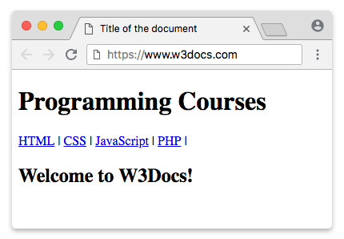

O HTML semântico tem como objetivo descrever o significado do conteúdo presente em documentos HTML, tornando-o mais claro tanto para programadores quanto para browsers e outras engines que processam essa informação
O elemento HTML header representa um grupo de suporte introdutório ou navegacional. Pode conter alguns elementos de cabeçalho mas também outros elementos como um logo, seções de cabeçalho, formulário de pesquisa, e outros.
O Elemento HTML de Navegação nav representa uma seção de uma página que aponta para outras páginas ou para outras áreas da página, ou seja, uma seção com links de navegação.
O elemento HTML section representa uma seção genérica contida em um documento HTML, geralmente com um título, quando não existir um elemento semântico mais específico para representá-lo. Por exemplo, um menu de navegação deve estar dentro um elemento nav, mas uma lista de resultados de pesquisa ou a exibição de um mapa e seus controles não possuem elementos específicos, e podem ser colocados dentro de uma section.
O elemento HTML aside representa uma seção de uma página que consiste de conteúdo que é tangencialmente relacionado ao conteúdo do seu entorno, que poderia ser considerado separado do conteúdo. Essas seções são, muitas vezes, representadas como barras laterais. Elas muitas vezes contem explicações laterais, como a definição de um glossário; conteúdo vagamente relacionado, como avisos; a biografia do autor; ou, em aplicações web, informações de perfil ou links de blogs relacionados.
O Elemento HTML Article article representa uma composição independente em um documento, página, aplicação, ou site, ou que é destinado a ser distribuido de forma independente ou reutilizável, por exemplo, em sindicação. Este poderia ser o post de um fórum, um artigo de revista ou jornal, um post de um blog, um comentário enviado por um usuário, um gadget ou widget interativos, ou qualquer outra forma de conteúdo independente.